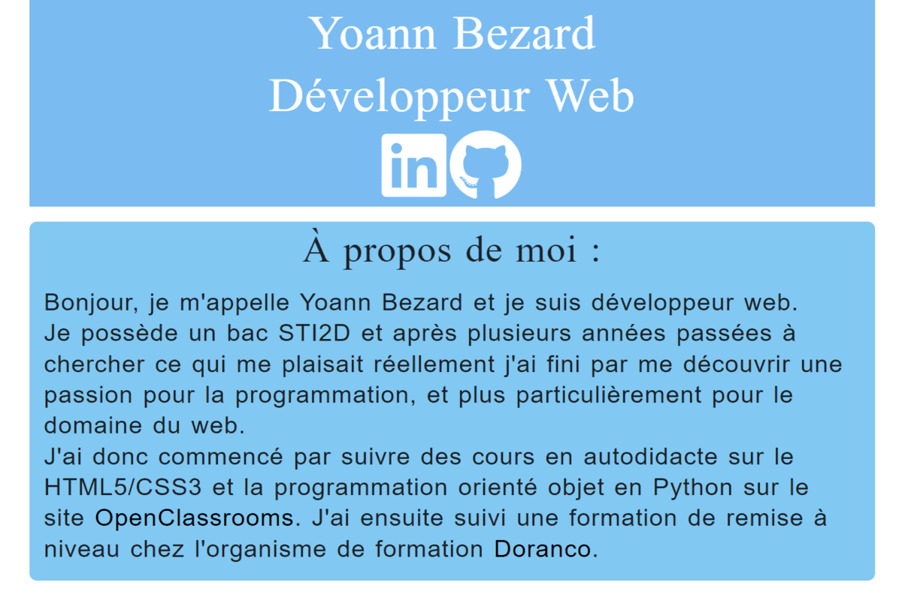

People who cannot find time for recreation are obliged sooner or later to find time for illness.
John Wanamaker.
My passions

Reading.
It is very easy to travel while reading a good book, sometimes we even feel like we are just flying over the words in them as we go through their pages.
A list of my favorite authors :


Music.
Listening to music can help me focus on the task at hand, relax or isolate myself from the outside world.
A list of bands, artists and soundtracks I like to listen :

Video games.
I've loved playing video games since I was a kid, and there's one feature they all have in common: you always have to click to keep playing.
I am particularly fond of J-RPGs : they are a wonderful fusion of rpg characteristics and Japanese genius. It's thanks to them that I wanted to invest myself in English: in order to play these games that are qualified as "niche games" and that were rarely translated here.
A list of my favorite game styles :

Science fiction and fantasy.
I like science fiction as much as fantasy, they are two types of universes which can be used in any type of art (cinema, literature, games, ...) and which have for only limit our imagination.
A list of my favorite science fiction and fantasy works :
Currently :
My skills as a developer
They are constantly improving because for me the joy of this job means that I learn something new every day; even more so by being involved, curious and passionate.
You can have a look at my resume, or check its pdf version to learn more about my skills and my professional background.
You can also take a look at my cover letter.
Les langages.
HTML5

CSS3

JavaScript

PHP

Java

MySQL

Les frameworks.
Bootstrap5

Les CMS.
WordPress

Les outils.
Github

Visual studio code

Android studio

Amateurs sit and wait for inspiration, the rest of us just get up and go to work.
Stephen King.
My portfolio
My resume

My resume in its web version, which I made exclusively for my website.
It was made during my web developer refresher course at Doranco, in order to allow me to practice my new skills and to have a first project to expose on my website.
- HTML5/CSS3
- JavaScript
- Bootstrap5
The veville project
, it is possible to simulate the reservation of a vehicle by selecting a city of departure and dates for the rent.")
The veville project is a PHP project that I did in one week during my refresher course as a web developer at Doranco.
It consisted in creating a car rental website for a fictional company named Location veville using my newly acquired PHP skills.
It has a registration, connection and reservation system for vehicles.
- HTML5/CSS3
- Bootstrap5
- PHP
- MySQL
Bugstastique

I did it in a day and a half at the end of my week-long WordPress refresher course for web developers.
I made it using the color-newsmagazine theme and the elementor builder.
I chose to make a site about a subject I find funny : bugs in video games, and to treat the subject by creating fake articles to try to create a real blog.
- WordPress
Le projet recette

It is a project that a part of the group with which I made my formation of developer of computer applications PGI/ERP decided to make in order to put into practice what we had just learned.
This was an exercise we had seen during our formation, and we decided to redo it while improving its functionalities.
In order to simulate a real situation we decided to use the agile method. We started by making new diagrams ( use cases, a simple class diagram, a class diagram et a sequence diagram ) in order to have a visual support before starting to work. We then worked through sprints and meetings at the beginning and end of the day to make sure that everyone's work was going smoothly.
On this project I mainly worked on the user side, both in the back and in the front. I also worked in duo with Corentin Rasda ( our group leader ) on the cookie part of the site. This system allows a user to stay connected on all the pages of the site during his visit, and the following ones if he leaves the cookie.
Finally, during the last hours of the project, I redid the comments of the HTML and JavaScript files to make them more readable and presentable.
- HTML5/CSS3
- JavaScript
- Bootstrap5
- Java
- MySQL
Tempo life

It's a website for a fictitious music school that I made following a model that I had made with one of my coworkers during my web developer refresher course.
- HTML5/CSS3
- JavaScript
Perfection is achieved, not when there is nothing more to add, but when there is nothing left to take away.
Antoine de Saint-Exupéry.